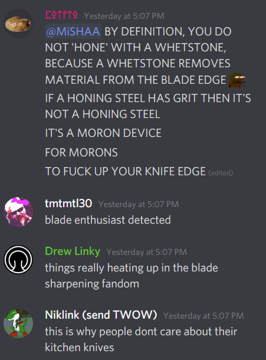

January 3rd
There was yet another absurdly heated discussion today involving Misha, but the recipient was Potato this time around. Somehow, though, the discussion was even more ridiculous than last time (apparently the chances of one in 100 million were of any one person in the entire world having that much luck over the course of an entire year, which is honestly an extremely obtuse way of stating the odds): apparently, the two managed to get into it over whetstones and what exactly they are used for.
In fairness, Misha was doing his usual thing where he starts to mock his conversational opponent in a very open and blatant way: “SHAPRPENING / HONING / ROD / … / whetstones are also capable of both sharpening and honing / you have been DUNKED / DEBUNKED / TROLLED / OWNED.” For those who are used to such barbs it’s less of a problem, but I don’t think Potato took kindly to it:

To cut a long story short, it was essentially a semantic argument as to what “honing” means: Potato’s position was that “honing” is not appropriate as a descriptor for what whetstones do, because honing only means reshaping without taking material off of the knife, while a whetstone by nature is sharpening by grinding metal off of the blade. Unfortunately we operate off of misused words that gradually come to be accepted for what they are anyway, so Potato has less ground to stand on here than they otherwise might enjoy.
Despite this confrontation, in which the participants both seemed quite riled up, out of nowhere they started speaking normally on the topic again. I thought this was odd but Reti was actually the first to comment on it: “Is nobody gonna talk about how misha and potato were about to kill each other until suddenly they just stopped arguing / I've never seen a faster turnaround” (Niklink: “im just happy theyre not shouting at me anymore”), but it was lost as people began discussing Charles II of Spain, and whether he might be a better ruler than people give him credit for, considering he was “basically rotting alive” and probably shouldn’t have survived past infancy from the sheer force of his inbreeding.
But I must move on. At some point yesterday, Gnawms had been temp-banned from mspa-lit for, as he describes it, “talking about music.” The mod notes explain that he had been told to move on and simply wouldn’t, which is more than in-line with warnings or bans we’ve given before. After being unbanned today, Gnawms occasionally brought it up which is also in-line with previous bans he’s received.
I finally lost my patience and basically told him to shut the fuck up about it. Ever since his initial altercations back when Tensei was still a mod, he seems to have developed a sense of persecution. I’m not sure how much of it is sincere and how much he plays it up, but he definitely complains disproportionately to how much he’s actually reprimanded. His counterpoint was that WoC brapposts on the daily and doesn’t get punished for it. WoC responded by saying “sniff,” and I banned him for the rest of the evening. These are the antics that I willingly expose myself to on an everyday basis.
For Gnawms specifically though: he has also complained, albeit jokingly, about not being mentioned in this document for a while. Well, here you go Gnawms: this is your final reference ever. Relish in it, for your name will not go down in the annals of pointless and obscure internet history as a figure of valiance, but rather of ignominy. Your name will forever be associated with decrepitude, steeped with shame.
To you I say: truly, this is your reward.
With that finished, however, the conversation turned once more. FurryLatula was describing more of his variously bizarre takes (as an aside, I’ll list a few gems: “all art is theft,” sincerely advocating for a death campaign against all landlords, “age of majority should be tied to working age by law,”), which garnered some dunking by MrNostalgic and Spiral. Nostalgic in particular drew a comparison to an old, old discussion from the channel: back on June 15th of 2017, Carlarc posted a link to a “Rationality Quiz,” which assigned you a personality rating based on your responses. The reason this is noteworthy, aside from being funny based on the concept alone, is that there was a question concerning how much you would pay to rent a machine that does a “neutral task” in 30 seconds which would ordinarily take you an hour.
The original incarnation of this discussion took place before most of our current residents even talked here, and those who were around back then were even more willing to engage in cutthroat debate. could only be described as a firestorm that somehow lasted days. Every time we thought we were finally done, something reignited the fight; there was endless refutation and disagreement on what the premise of the question even meant.
I would go into more detail, but I believe I’ve described the argument before. As for nowadays, Spiral mused that, “the rationality quiz was definitely not the longest but it was one of the worst.” I managed to find the original link and posted it in chat, but our participants now have far more restraint (or less inclination to fight, one might say) and it didn’t come to much.
Perhaps this is for the best: I’ve seen the sentiment more than once in just the last few months that, while less active, we are far, far more stable than we used to be. It’s hard not to see the value in that, though I still do miss the occasional frenzy. Today’s whetstone discussion was a small taste of that, and it’s always rather enjoyable in small amounts, but I suppose it’s good not to overindulge in discourse.
Nothing more for today.
19th of February
A multitude of things have happened since I last wrote, which I’ll do my best to give their due description: the first and second chapters of Psycholonials have been released so far, to quite mixed reception. It would be too much detail to describe why reception is mixed, so suffice to say that Hussie has not responded well to what criticism exists so far.
This is actually relevant to other news: at one point Homestuck 2 was put on hiatus until after February, then until after April, and then finally it was put on hold indefinitely. A news post clarified that Homestuck 2’s Patreon has officially been closed and the comic will not undergo further serial updates. Instead, it will be worked on and released all in one big batch1.
Hussie’s reasoning for this involved many things, but one in particular that rankled with us was the claim that the creators had been experiencing criticism and abuse ever since the project’s initial release in late 2019. The specific reason this bothered us is, I believe, the implication that most or all of the negativity surrounding Homestuck 2 was abusive. A few fellows on the subreddit pointed out that Hussie is skating over all of the constructive criticism or even positive feedback in favor of focusing on the overtly negative and especially the outright harmful, but I don’t believe anyone is surprised by this anymore.
Contrasting with official news, events within the HSD itself have continued without interruption for a while and we find ourselves in a period of relative stability. Makin’s weekend streams have garnered a decent following, with them finishing up Futurama and Star Trek: The Original Series and soon to begin Arrested Development and Breaking Bad. Misha has been streaming various shows for #eastern-media on Tuesdays and Thursdays, with the most recent being a parody of the Super Sentai franchise called “Unofficial Sentai Akibaranger.”
HarpyHour has just recently stepped up to the plate and decided to host a “Let’s Read” for the Homestuck category of channels: he conducted a poll and the crowd settled on The Tapestry, a fanventure grounded heavily in sci-fi. It’s good to see such things keeping discussion going, especially seeing as official content will probably enter a rut after Psycholonials is finished in late April. If there’s anything official or otherwise that I’ve forgotten to comment on, I’m sure Makin can fill in the gaps2.
This all aside, I want to comment on a fun thing that’s popped up within the last month or so: there’s a user named Emma Shethey who, much to the delight of Carlarc and a few others in chat, has been posting a large number of pictures of fat caracals, which they adoringly call “floppas” due to their peculiar manner of flopping their long ears. A departure from our more usual idol, Fat Husky, the caracals have nonetheless been admired so much that Ifnar added an emoji celebrating them3, appropriately dubbed FatFloppa. Let it never be said that we are bigoted towards obese animals, canine or otherwise.
Nothing more for today.
23rd of February
HarpyHour was recently promoted to full mod due to continuously excellent work as a pseudo, as well as showing some impressive initiative by bothering to start the aforementioned group read through of The Tapestry. Previously, Harpy’s domain was constrained to the Homestuck category of channels, and so based on this promotion I decided to visit the one channel (#homestuck2-hiveswap was archived due to the apparent lack of developments we will receive about either property) to do a more extensive look around than I usually bother with.
The culture of #homestuck shifts around far more than mspa-lit’s does, to the point that it’s hard to say that it has any sort of solidly identifiable structure. This may have to do with the fact that it is a much slower place, having on average 1,000 or less messages per day, and often enough less than 500 (while positively glacial to me, one user named TheFoun complained that this was still too fast for their tastes) . This is to be expected due to the far more refined focus of the channel, especially since the object of that focus has been completely static for years now.
The most I can do with this brief glimpse is point out a few people who stand out to me: I noticed Starkuss participating, who I thought kept to #general only. There was a particularly irascible fellow named Clander who was constantly telling Harpy and others to eat shit or saying things that didn’t quite make sense, but this seemed to be completely accepted behavior by everyone else in the chat.
Though I know nothing of their personality, I noticed someone named apocryphalCharlatan who I’ve seen speaking in #music on a nigh daily basis--I point this out because it’s easy to forget the cross-pollination that can happen in channels outside of lit. There’s a great amount of crossover here with #gaming and especially channels like #general and #altgen, and of course mspa-lit.
Speaking of, there were a few people I’ve noticed speaking in lit increasingly, such as eightball, a fellow named keithmoon, Goodcat612, Topaz, Dureseye, and Emma Shethey. I noticed the presence of Jamie (a long time lit user whom I’ve apparently never mentioned in this document, despite their well-deserved place in it) and the mention of other people such as FurryLatula. He appeared to be absent today, but apparently Lat’s takes are the butt of many jokes among the group that inhabits #homestuck. In this, it seems that his manner is consistent with mspa-lit.
As a whole, there are some peculiar similarities between the people frequenting #homestuck and mspa-lit. Obviously there are a lot of similar people involved, which enhances the feeling, but I noticed that they tended to get off of the topic of Homestuck and discuss whatever suited their fancy. It is important to distinguish that they were much better actually getting back on topic, and were pretty averse to derails as far as I could tell. They were also less abrasive at a glance; their dynamic seemed decidedly polite, mostly interrupted by Clander’s nonsense or someone trying to bring up an unrelated discussion.
Emma, who I described in the previous entry, was talking rather animatedly in the channel. Ironically, my presence initiated a discussion of this document, and tangentially to how people feel about mspa-lit as a channel and culture. Mainly, Emma mentioned that she doesn’t feel that she counts as a regular in mspa-lit.
I’ve seen this sentiment oft repeated among various people in the channel, and as the days go by I have to say I don’t feel like it’s a very constructive way to examine one’s participation. Worrying about being a regular leads to awkward interactions and behavior (though usually only in extreme cases, such as obsession). I pointed out to Emma that her contributions have directly yielded to the creation of an emote and fundamental subset to Fat Husky, through Fat Floppa. Given our lord and savior’s stature, this is assuredly no small feat; Emma’s fear is undeserved, as it surely is for most other people who might worry about how often they participate. Typically, if they bother caring in the first place, they try enough for it to matter.
Nothing more for today.
27th of February - HSD’s Fifth Anniversary
I distinctly recall, at some point early in this document, writing about where we might all be in five years. Sadly, not everyone who was around back then is still here. The landscape of our community has changed much over the last five years, but I am pleased to say that we are still here despite it all. We’ve experienced much more than I thought we might, too, which makes the fact that we’re still around quite satisfying.
Even more than that, we seem to be burgeoning somewhat. We’ve just recently hit 19,000 members in the server as a whole, and I took it upon myself to conduct an informal census of mspa-lit: much like the last time I did this, I took a set timespan (in this case, one week leading up to this anniversary) and simply recorded every unique name that I saw talking in the channel. At the end of the week, I searched for how many messages each participant sent.
This is far from a perfect measure, but it does serve as a sort of litmus test to see how “healthy” the community is, based on a variety of arbitrary measures. As a rule of thumb, there are two main factors to look for: the number of unique participants, and how many messages are sent. This second idea can be looked at in a more nuanced way, though: what does the distribution of messages look like across all users seen--that is, is it distributed evenly across a large number of people or are only a few people responsible for most of the messages sent?
Generally you want to see everyone participating on a decently equal basis, though there will always be outliers on both ends of the spectrum. Indeed, I have a sneaking suspicion that we were visited by an unusually high number of people who only sent one or two messages and then departed. Some of these individuals were once regulars themselves, such as Putnam. Others are longtime lurkers such as Cruuk, popping in for the occasional message as a matter of habit. However, others were odd one-offs who almost assuredly will never use or even look at the channel again.
As far as concrete data is concerned, there were 113 unique individuals who passed through lit over the week. As an aside there are four notably missing participants: Cyrene and Zentoyo, who have both requested to be removed from the channel temporarily by request, and then Gnawms and Xoro, who simply haven’t been seen in a couple weeks for unknown reasons4.
Of those 113 participants recorded, the message spread is actually wider than I expected: for the week in question there were over 50 individuals who sent over 100 messages, almost 25 participants who sent over 500 messages, and then only four individuals with over 1000 messages. The total number of messages sent in the channel for the week was about 29,400. I’m not a statistician so it’s difficult to parse where cutoffs should be, although from my rough calculations it seems almost no one counts as an outlier (Misha has the most messages at 2353, but his count is highly inflated due to his infuriating tendency to separate sentences into multiple messages when he becomes excited).
The average number of messages sent per user for the week was about 250. It’s hard to get into what this all means exactly, but it helps to contrast it with the last time I conducted a census like this. After going back to check that data (I recorded the entire month of April 2020 last time), there were 65 unique individuals and the total number of messages sent was around 120,000 for the entire month. Extrapolating for three more weeks, we experienced roughly the same amount of volume this time around but had almost twice as many unique participants in only a fourth of the time. It’s likely we would have had far more if I had been keeping track for all of February.
From this, the average number of messages per user last time was far higher, but the spread was also much narrower. Thus, the takeaway from the mspa-lit census is that, while some individuals are each talking less than last year (difficult to tell exactly based on the differing timescales I worked with), there are a greater number of people all contributing more equally to discussions. This is pretty in line with what we’d prefer in not creating a hugbox, and in the previous entry I did state that there are some new faces floating around in the server.
All of this illustrates to me, at least, that activity remains roughly the same and we are simultaneously casting a wider net. It’s to be expected that the average amount of talk per person has slowed down somewhat, but it is very encouraging to see that we have developed a bigger community in general, especially considering the state of the official properties.
It should be briefly noted that a few individuals, including Spiral and Lat, did admit that they were participating less than usual for various reasons. That being said, in a time where the future of Homestuck and its adjacent material is uncertain, it’s nice to know that we are continuously gaining new members who all bring fresh perspectives to the table and keep things interesting. If I can remember to do so, I think I’ll be making this census a yearly affair using these same methods from now on.
Nothing more for today.
4th of March
Two days ago Makin added a new shill entitled Starwink, which is truly a momentous occasion. It’s important to keep in mind that the contents of the shills list actually serve two purposes: they’re meant to be stories that Makin considers high quality and generally deserve more exposure, and they are also meant to generate discussion. In this latter point, Starwink certainly succeeded.
Without getting into too many details, the central conceit of the story involves certain developments or themes that are arguably related to eugenics. I specify “arguable” because the precise case is complicated, and it can easily go either way depending on individual interpretation. Indeed, most people in the chat who read the story--a mere 8,000 words, so accomplished quickly--did not draw the comparison, or simply didn’t bother to do so verbally.
Gitaxian on the other hand singlehandedly spearheaded a considerable dissent about how the tone of the story is actually distinctly related to eugenics, and that it disgusts them severely because of this. So ardent were they in this thesis that we ended up spending a solid hour or two doing nothing but arguing this point through various minutiae. It actually grew quite heated, more so than usual before Makin started employing his usual Fat Husky distractions5 and other techniques to simmer things down.
Recalling the purposes I laid out before, it can be said that Starwink easily fulfilled the role of “generating discussion,” a point that all present agreed fulfilled it as a good shill. It was actually quite fun to be put through the ringer like that, in a kind of discussion that we haven’t had in some time (we would ordinarily have them every month or so, but Worth the Candle has been taking incredibly long amounts of time to update lately). Though Starwink hasn’t come up in the two days since Makin initially posted it, I have little reason to doubt that it will return one day, and we will rehash this whole ideological roundtable in no less feverish a manner.
That all being put aside, the only other thing I want to write about for now is far sillier a topic. Namely, WoC brought up some nonsense today and I was reminded of his stunning penchant for somewhat successfully forcing memes. Specifically, he asked about a completely fabricated idiom and managed to convince a few people present, including myself, that it was Canadian in origin (he called Reti, a prominent Canadian, to laugh at his expense once the gambit was revealed).
More than this though, WoC immediately pulled a few more fake idioms out of his ass on the spot and they all managed to sound convincing in their usage. One in particular, “torching the whiskey,” was used as a response to me trying and failing to come up with any useful turn of phrase, and as such could be taken to mean that I was “exhausting yourself over nothing.” At this point B3es chimed in with one of his own: “thick fish-lifters,” which is just an asinine way to refer to someone who’s very heavily muscled.
These kinds of exchanges happen enough that my brain tends to skate over them anymore, but something about these two specifically stuck out to me. I think it’s amazing what kind of dumb memes or even run of the mill malaproprisms can potentially catch on and become wholly new additions to a common space’s language. Obviously for the most part these get forgotten over time, but the most popular ones endure and permanently enter one’s personal lexicon. It’s a pretty weird form of knowledge transfer, to the point that I wonder what words we’ll all be using decades from now that come from the HSD--we probably won’t even remember that they came from here, when all is said and done.
Nothing more for today.
13th of April - 12th Anniversary of Homestuck
It’s that time of year again. I actually expected today to be somewhat calm and unremarkable, outside of the obvious, but dear goodness was I wrong.
A youtuber named Sarah Z put out a video essay called “A Brief History of Homestuck” which, as the title implies, covers Homestuck as a property, with some details about the fandom as well. Though only relatively brief, at over 2 hours and 10 minutes, it keeps to general ideas and only mentions some few details in passing, including--to my surprise--the emails we released last year.
In all I felt the video was well written and decently structured, though it did lead to a rather interesting outcry on Twitter. Aysha, presumably without seeing the video in any sense, literally called it a “hit piece” and there is a disturbing screenshot of her personal server where she says “GET THIS BITCH,” linking to a tweet by the writer Gio, and calling them a stalker.
After the shockwaves from this dramatic development subsided, we started the usual business of endlessly dissecting and analyzing how and why this happened. I would say there are two camps depending on how one feels about Gio’s writing, but that’s not really true. While it’s accurate to say that there are mixed feelings about their journalistic integrity, the overwhelming consensus is that this reaction to Sarah Z’s video--not just from Aysha but numerous other people on Twitter--is so disproportionate that it obliterates all possible justification.
B3es was uncharacteristically irritated with Twitter’s reception to the essay, implying that he’s seen numerous videos by Sarah Z. He describes her as being “obsessively centrist” and goes on to say that most of her positions on the things she covers occupy territory that is somewhat milquetoast. After watching the video for myself, I have to agree that it sticks stubbornly to the middle of potential explanations for any and all drama over the last few years: Sarah Z laboriously presents all potential viewpoints, drawing both from Gio’s articles and official statements put out by members of WP. She goes on to say, repeatedly, that these sources are not necessarily trustworthy and to exercise critical judgment on them, and for good measure she implores her viewers that harassment of any creators is strictly unacceptable.
Apparently these disclaimers weren’t enough, as a few Homestuck fans on Twitter still threw their all-encompassing tantrum. This particular instance was unusual as there were a litany of responses telling Aysha and other detractors to calm down, as the actual tone of the essay was decidedly neutral and completely fair. This did nothing to assuage those unhappy with the video, which gave the appearance that Homestuck Twitter was eating itself alive.
This was all somewhat unusual for us, in the sense that we were not directly involved with the drama this time around, affording us an outsider perspective on the veritable shitstorm. It didn’t necessarily make it easier to discuss, but it definitely made it easier to poke fun at the events in question. For example: at one point Aysha made the claim that Sarah Z “didn’t attempt to get in contact with any of us,” to which Tensei drafted a joke tweet that said: “I feel ya sis. Fwiw we (the homestuck reddit discord) didn’t get consulted on anything either. Let’s call it a wash?” He then said that he accidentally posted this for real, causing chat to briefly explode with amusement.
Some hours into the day, there was an unprecedented statement put out on the Hiveswap Kickstarter for backers. It provides an exhaustive refutation of “misinformation and deliberate disinformation” surrounding the development of Hiveswap. Specifically, it describes the state of What Pumpkin’s studio in New York City and the troubles concerning The Odd Gentleman, as well as various staffing issues. For some this refutation served as more or less adequate explanation, but for others--myself included--it is still vague to the point of unacceptability.
Unfortunately, it is largely being taken for granted that non-disclosure agreements surrounding Hiveswap and The Odd Gentleman are still in effect, which continues to frustrate understanding of the events. Makin disbelieves that NDAs could still be in effect so much time later, but generally NDAs can last for up to 10 years. If the contracts are set for that time span then they will expire in a few years, but until then we’re still ultimately forced to speculate on these matters, much to my and other people’s annoyance.
As an interesting bonus from this statement, included as evidence is a playable prototype for Hiveswap. Notably, this prototype--little more than an extremely broken tech demo--is from back when it was still a 3D production. Kratospie made a joke that this could be considered fulfillment of a long kept promise to distribute the beta of the game to Kickstarter backers:
- “THE BETA" Joke
- April 13th 2009 - April 13th 2021
- 'At long last, in our Emails'
(“The Beta” also simultaneously being a joke about Beta Homestuck, an experiment in making the comic purely in Flash, from just before Homestuck proper was released).
The tech demo is largely unremarkable and honestly kind of shamefully incomplete for the stage of development it was in: most things about it simply do not work, and it can be completed in a very short period of time. It’s such a quick experience, in fact, that Emma Shethey and another user who wishes to remain anonymous actually started competing to speedrun the game.
The longest time I can recall was somewhere around 30-35 seconds, but through various absurd exploits they were able to shorten it to just below 15 seconds. Of note, the demo has literally no text in the French version, so that all dialogue is skippable. The entire process of refining the speedrun happened over merely 15 minutes of constantly improving their technical skill and finding various glitches or exploits. Emma eventually emerged the world record holder for Hiveswap’s Prototype at 14.91 seconds.
This aside, several hours after the statement was put out, Sarah Z sticked a comment on the video essay saying that she was being threatened with explicit legal action. This sparked some indignance from us, as a preposterous overreaction to something that is decidedly neutral in tone and treatment. Unfortunately there’s not much more to be said about this for now, as obviously none of us are privy to the ongoing details. Suffice it to say that, if this is intended to mute the video’s reach and “prevent damage” to What Pumpkin’s reputation, they have succeeded only in making people upset due to their absurd overreaction and damaging their reputation on their own.
Moving on to more pleasant things, we had the annual community stream as usual, and the turnout was actually somewhat surprising: as stated at the beginning of the entry, I expected this year to be perhaps a little bit less active than last year’s stream, but we had a very decent turnout. We watched James Cameron’s Avatar, the Con Air Special Edition of course, and then Big Money Rustlas. The peak viewership was 275 people during Con Air, and I recall several people saying that it “hit differently” this year, being more entertaining than previous watches (unfortunately my internet was not able to keep up with the movie so I couldn’t share in the experience, much to my disappointment).
A user who’s been participating more frequently in lit lately asked for statistical information. As an aside: this user, Faeby, is a rather whimsical regular I’m most used to seeing in #general, and is rather open about circumstances of her life with us (describing particular details such as an ex who “owes her $10,000” and a self-described drinking habit, which I sympathetically indulged in alongside her). Curiously she’s the only one I can think of on the server who has an avatar which is literally just an actual picture of herself6. She’s one of a few people in #general who have a tendency to occasionally dominate discussion, including Angel and thebadnut, but I believe this habit may have subsided over the last couple months.
That being said and done, the stat information I provided her were brief and rather notable, so I will include them here: for 2021 so far we see an average of 16,000-18,000 messages per day, but on 4/13 we saw 35,000 (and the day after we saw nearly 50,000, an impressive enduring spike). On average we have 5-10 net new users per day, but for 4/13 it was fifty new users (though for 4/14 we dropped back down to average), which is possibly the greatest swell of new users we’ve ever had on a meme day.
Due in no small part to the fallout from Twitter drama, there was a lot of hilarious content that was put out by users in mspa-lit. We actually hit an all-time record for pins in a single day, reaching no less than seven (the previous record was three, set earlier this year). Relatedly, not long ago user eightball volunteered to create a separate image archive for funny Arquiusbot responses using the “D--> linky” function. This is immensely useful, as it both cuts down on space being taken up in the pin list and also reduces selective pressure on which responses we feel like screenshotting and saving. It’s always pleasant to become more organized and keep things going smoothly.
Overall, this 4/13 was far more contentious than I expected it to be when I woke up. We’re all waiting to see what comes of the altercation between WP and Sarah Z, but it could be a long time before we see the conclusion, if ever (some speculate that Sarah might simply ignore these threats, but she appears to be taking them seriously). Otherwise, for now we are enjoying the increased vigor that always comes with these community events. 6/12 certainly has a lot to live up to this year.
Nothing more for today.
1st of August
As I feel like I’m running out of things to say, and especially with some bigger changes in my life happening recently, SPAT entries will probably become more like this one: individual days will be collected together for ease, since it means I spend less time on formatting or trying to make smaller entries satisfying on their own. The ensuing paragraphs will all be longer than usual and not have any clear transition from one topic to the next, unless the topic is just that important or otherwise extenuated.
For some months now, Harpy has been running the fanventure read along. The event appears to be proceeding very well, with a decent number of participants even for fanventures that--at least at first glance--appear to be relatively obscure. There have been some odd difficulties with it, however: initially, they tried to make it a democratic event, such that participants could nominate and collectively vote for which fanventure to read. Unfortunately, it was exceedingly obvious that someone was using this system to gain visibility for their own story. This actually happened a few times, after which Harpy declared “democracy over” and that they would simply choose which one they were doing from now on. This caused some grumbling at first, but ultimately has proven to be a stable enough system7.
In May or so, Makin decided to remove a lot of the emotes that resemble either himself or myself, in an effort to stymie any possible complaints8 of HSD being a “circlejerk” surrounding either of us. There was some dismay from mspa-lit regulars about this, but it’s hardly out of line with previous claims and actions that Makin has taken on the subject. Thus, the emote “bred,” depicting me eating a baguette like a wild animal, was removed. Another one of mine, an edit by WoC where I resembled monkaS, was initially taken off but then some weeks later readded by popular demand--the utility was apparently missed too much. Makin himself retained one called “makinsmush” that we’ve historically used to call him out when he’s intentionally being a jackass, a state sometimes referred to as “smushy.” Thus, the vain emotes are gone, but the more utilitarian emotes remain.
Tensei specifically requested, at some point, that I “talk about how some people feel like they’re not smart or funny enough to participate in the channel.” I don’t remember when this happened or the exact context, but I do remember agreeing with him that it was an interesting idea. I seem to recall one user or another, probably a wanderer from gen or altgen, commenting something to this effect. It’s kind of weird to see both ends of the spectrum in this regard, where we get people talking down on themselves, and then conversely others will complain that the conversations in mspa-lit are merely pseudo-intellectual or boring. When you get to a contrast like that, you can’t help but chalk it up to taste; different strokes for different folks, as they say. Tori (who has since left the server for benign reasons) joked: “the only reason I can post in here is by repeatedly establishing my role as a combination of court jester and uninformed reader insert intended to prompt exposition from other characters.” Based on this and other comments, it’s clear that--even if it’s not a universal thing--some people do in fact feel some kind of pressure in how they behave while talking in mspa-lit.
My own thoughts on the idea are that we definitely prefer some kinds of conversational participants over others, but it’s kind of hard not to do so even just as a general thing. Few people want to admit it readily, but it’s difficult to enjoy a discussion where one or more participants are slow, dull, boring, repetitive, or whatever negative attributes you might want to put there. Even just by unconscious preference, a group of chat members that builds a reputation and camaraderie with each other are not going to be very tolerant of people who disrupt the overall quality of what’s taking place. “Newcomer” by itself is not something that’s applied as a pejorative, at least not seriously, but a newcomer in chat is always an unknown element. First impressions really do matter a lot, because a highly visible outsider making some kind of blunder is going to have a hard time resuscitating their reputation, as opposed to a well-known regular who flubs up relatively infrequently. This isn’t particularly fair, especially in the sense that it’s easy to mess up first encounters through sheer unawareness of norms, but I’m not sure there’s anything we can do about that besides opening the gates and ignoring blatant missteps. Granted, it’s fair to say “they don’t know what’s going on yet,” but it’s also fair to point out the faux pas and expect them not to repeat it. This latter part, in my experience, is usually the issue, as opposed to any first contact scenarios gone amiss. I’m pontificating on this matter entirely too much though, and losing my train of thought. On to the next topic.
In the first week of June, Makin described that he would be gone more than usual, so he told me to handle anything that comes up. This isn’t the first time this has happened, occurring a few times across the last four years or so. Unfortunately, something that’s gotten only slightly better over those four years is how soft I am on people when it’s not a clear cut case of rulebreaking. In the relevant case, brapposting has intermittently been a problem, but in such a way that it’s been weird trying to establish a rule. For a period of weeks it may only ever come up as a completely appropriate response in some conversation, but then you’ll get one or two days where someone--typically WoC--just won’t fucking stop. As a result, we usually go on a case-by-case basis at this point.
At any rate, it was a few people involved this time around, including Moonjail, and I finally had enough of this horrid nonsense from someone who is otherwise upstanding to an almost superlative degree. Though they mainly got caught at the tail end of the debacle, I decided to ban them specifically for an almost ritualistic purpose: like Jesus Christ taking humanity’s sins upon himself, Moonjail became a sacrifice, a scapegoat upon which I tried to pin all brapposting. I made it clear I wanted no more of this, at least not for anyone to spam it like they occasionally would--no bans would be issued for other offenders besides Moon, but they all had to stop. I am astonished to say that this effort has mostly been successful, and in the month and a half since, I’ve seen almost no extended brapposting of any kind. Moon was unbanned three days later, rising from the grave as it were, and resumed their place among the flock. That metaphor got a little fucked up, but I’m sure you get what I mean.
Around the time Moonjail came back, Misha brought something positively vile to the chat. He had milk and coke and asked which of them to drink first, describing it as a conundrum since both drinks are only good when ice cold. A few including Mint, hb, Tay, and tmtm told him to drink both simultaneously. Mint took it a step further and told him to add rum, and thus a new cocktail was born: two parts milk, one part coca-cola, add rum to taste. A simple recipe, but the end result made various people in chat feel sick to their stomach just thinking about it. Naturally, a bunch of us decided to try this concoction out for ourselves. The proceedings were calm enough at first, but then eventually pandemonium ensued: WoC and Tarty gave it a shot and described it as “surprisingly not bad,” at which point I decided to hop on the wagon. I agreed with their assessment, up to a point: the taste and texture were both individually fine in a way that mixed together to be completely awful. At this point all of us began to experience significant gastrointestinal distress, whereupon we collectively decided to call it the Cheesemaker, since alcohol curdles milk (at this point, Tarty described: “The first gulp from the glass of the Cheesemaker will turn you into an atheist, but at the bottom of the glass God is waiting for you.”). Moonjail eventually joined in with their own custom drink, “Anaphylaxis on the Beach,” consisting of amaretto and Leinenkugel’s Summer Shandy, upon which drinking they rapidly devolved into the written equivalent of Mongolian throat singing.
The overall point is that my handling the server without Makin went perfectly fine.
At some point, Makin created a new channel for something he initially dubbed the “Homestuck Timeline Project.” Therein, he put out a message recruiting the help of any user who had knowledge of stuff that’s happened in the fandom and when. The actual message stated: “This is a channel for developing a crowdsourced fandom timeline.” I was unable to participate unfortunately, not having much information to contribute, but thankfully he ended up receiving some valuable additions. Evidently his efforts bore fruit, because then for 6/12, he fully released the Homestuck Timeline on homestuck.net. Though there was a dim undertone due to the fact that we didn’t receive any official news for the meme date, it was a jovial time for our community nonetheless with our typical stream experience.
On the 10th of June there was a preshow for E3 that we decided we wanted to watch. Whenever E3 rolls around each year, if there’s anything we’re interested in watching together, we usually put it up in the group Cytube channel so we can all share our reactions in real time in a more streamlined manner. The preshow unfortunately coincided with a stream time that Misha has regularly been using for a long time now, many months. Makin commandeered the room regardless, so Misha got absurdly pissed off and left the server entirely. I was not in a position to respond quickly but saw it happen, and nearly blew a gasket at both Misha and Makin for their handling of the problem. By the time I was able to comment, the situation had largely resolved itself though; Misha came back after an hour and admitted he had badly overreacted, then Makin eventually described that he wasn’t paying attention and genuinely didn’t know Misha had reserved the room at the given time. I didn’t have to yell at either of them, which was a rather pleasant surprise. Thinking back it’s actually possible that my involvement would have made matters worse from my sheer frustration, so perhaps it’s a blessing in disguise that I was unavailable. Regardless, I’m happy they were both reasonable enough to make up over the issue.
On the 30th of June, Sarah Z posted a followup video where she described receiving a threat of legal action from What Pumpkin after releasing her history of Homestuck video back in April. She further details an email chain she had directly with Andrew Hussie, where he claimed to want to describe details she got wrong or why certain sources she referred to were untrustworthy, but then generally gave her a ridiculous runaround. Thankfully she dealt with this shitfuck of a nightmare encounter in a much more effective manner than we did, and in the process she provided a rather laborious dissection of Hussie’s responses, detailing them as variously “vague” and “ghoulish.” As one might expect, this unleashed a fresh wave of discussion on the subreddit and Discord server. In those places, the new information was seen as simultaneously cathartic and horrifying: it’s relieving to know that we’re not the only people to know and understand Hussie’s moronic and even malicious behavior, but I personally felt rather bad that someone else had been exposed to his chicanery.
There was the usual retaliation from people who are still in What Pumpkin or Hussie’s orbits, ignoring claims in the video or outright fabricating accusations (the details of which escape me at this point, but there are plentiful examples assuming those tweets aren’t deleted) against Sarah Z for posting the video. Very shortly after the video got released, Gio also published another article on this weirdness. Gio then came to chat with us about the proceedings for a few days, which was a pleasant affair. Strangely, we seemed to get a massive influx of people in mspa-lit for about a week, easily amounting to a couple dozen completely new faces. We’ve even retained a few of them since, but especially at the time it was a rather noticeable increase.
As it is, things have thankfully calmed down in the time since. There’s a general sense of unease, I think, about the future of the property. It’s difficult to overstate how serious of a nail in the coffin this all was: people in our community were already not happy with Hussie and his cohorts because of our own interaction with him last year, but there were still a number who were on the fence because Makin and I didn’t handle the interaction very well. Sarah Z handled it in a much better way, which makes it far less ambiguous that Hussie is not behaving appropriately, though it does make it a tougher pill to swallow. I’ve commented elsewhere that Hussie et al. need to change course immediately, in terms of how they treat other people and their audience, if they want any hope of rescuing the property and their careers. Unfortunately, I don’t know if they have the emotional wherewithal to do so, or that they even care about not fucking things up for everybody, including themselves. Time will tell what happens, but most of us are now convinced that Hiveswap and Homestuck 2, and by extension Homestuck as a whole, are completely dead properties. Many have pointed out that this was going to happen at some point regardless, but even worse, some are starting to argue that the franchise dying completely is the best outcome.
On the 13th and 14th of July, Moonjail, WoC, and then Anervaria all stepped down from their positions, and a fourth approached me in private about maybe following suit for personal reasons. The timing is just an unfortunate coincidence, as the three were all just tired of being mods--in WoC and Anervaria’s case it was more than understandable, seeing as Aner had four years on the team and WoC’s been on it longer than even I have. WoC is still technically on the team, just as a botmaster instead of typical mod staff. Still, it’s very sad to see all of them decide to halt their duties. I almost get the feeling that we’re due for another Reckoning, perhaps catalyzed by these changes. The server isn’t exactly in dire straits without them, but mod team shake ups always involve a lot of effort to find suitable replacements and get them up to speed, especially if they’ve never had mod experience before. That having been said, I’ve grown to really appreciate the process of recruiting people and giving them community management experience. Obviously we’re not a very serious organization or anything like that, but being able to participate in a structured environment and learn how to keep things in stable condition is pretty valuable. Besides, stagnation is to be avoided. We’ll just have to see how things work out.
Over the course of late June and especially July, we’ve witnessed a significant rise in a trend of “recycling9” posts. Rather than referring to the actual reposting of material that’s already been seen, “recycling” in this context refers to reacting to the post or repost in question with the recycle emoji, to signify that someone has seen it before. This has happened before in the year, once or twice in February and in the subsequent months, Tensei and Tera being convinced that we started doing it as early as last year, but it wasn’t until July that it really exploded in occurrence. Naturally, as with anything that suddenly rises in popularity of practice, the people who hate it have also increasingly voiced their distaste for it (Moonjail in particular has been rather acerbic in their disapproval of the trend). Now the practice seems to have fallen somewhat out of vogue, as I’m not noticing it much anymore, but the times I do see it feel like they’re more semi-ironic than a genuine attempt to call out reposted material. This makes sense to me; after all, when you think about it, it’s rather selfish to complain about reposted material unless literally everyone--or at least an overwhelming majority--has seen it already.
The Psycholonials subreddit appears to have been abandoned by its creators and all mods for an extended period of time. After checking myself, near the beginning of July, it seemed that none of the mods on the subreddit had even been online for a period of over two months. At that point, Makin decided to step in request a transfer of ownership from Reddit. This is actually parallel to a more general sitewide decision to strip ownership from subreddits that have a dearth of activity10. The overall result is that the request went through, and Makin now owns the Psycholonials subreddit as well. He’s put METY on the team as well as recruited a few others in order to try and revamp and glorify the subreddit, though it will surely take some effort.
As a self-indulgent side note: Makin went to mspa-lit at some point and asked if there was anyone interested in moderating the new sub, but I specifically declined because I wasn’t a big fan of the story and trying to take care of a space for something I don’t care about is generally a rather poor idea. I believe the contrast here speaks for itself. Now, I can only wonder whether we or more specifically Makin will face any kind of backlash for the takeover. It’s been a little while since the change went through and no one has noticed yet, though. I’m not sure if it’s possible for that to really change; if Hussie makes more Psycholonials content then perhaps, but we’ll just have to wait and see.
Finally, a minor note, but a couple months ago Faeby wrote a delightful paper about folk groups, and decided to make the subject our Homestuck community11. Though not edited, once it’s ready I’ll be putting it in section B of the supplemental materials. Nothing else for now.
8th of August - The Huskening 2: Ascension
It’s been nearly a year since the last Reckoning, which means that it was time for Makin to conduct another mod team shakeup. The shakeup aspect of it is rather muted this time around, however: as this Reckoning proceeded, Makin made fun of the fact that it seemed we were mostly choosing the same staff members, though we actually did lose and gain a substantial number.
In particular: Tay, Anervaria, Ci, Neth, Penumbra, Prime, Reti, Tipsy, VirtuNat, Shroom, and Pax Probliscum were all completely removed from the team. Ennemy was initially removed completely, but I lobbied to have him come back as the art-cosplay pseudo. Tera was elevated directly from janitor to full mod, and B3es and Juliette (RAARzard) were promoted to full mod as well. In the wake of WoC’s resignation, grimPike was promoted to #gaming pseudo, although WoC is still present in mod chat as the bot master (attracting some grumbling from people who don’t appreciate his eccentricities). New staff members include Axolotl and Snoiper as #altgen janitors, then Chasca for #general pseudo, Kreuz (#general), Lat12 (#general), Slashed Out (#altgen), and Tyzuigi (#altgen).
For channel changes, I can’t remember the exact date upon which some of these occurred, so I will simply provide the ones that come to mind: #music, #hs-art-cosplay, and #oc-hell were archived due to lack of activity and redundancy, #western- and #eastern-media have been recombined into one channel simply named #media, and #alt-homestuck has been brought back by popular demand as #homosuck (with extreme warning provided such that, if harassment or threats break out again, it will immediately be removed again). Most dramatically, #fathusky was archived in the name of encouraging people to post fat husky everywhere in the server instead of just one place. Thus ends the fifth Reckoning.
Also of note: we’ve received word that the Pgenpodcast Discord server has officially dissolved. Interestingly, those in charge have discouraged but do not outright forbid their users from moving to our server (I’m not sure exactly why we were called out like this; perhaps we were seen as the only viable competitor). Regardless, it feels somewhat strange that Pgenpodcast has resolved in this manner. Time will tell if there’s any significance to it.
Nothing more for now.
17th of September
The second chapter of Deltarune was released somewhat unexpectedly today; it’s one of the more anticipated titles of people on this server, so we pulled the relevant channel out of retirement. As one might expect we were immediately inundated with an assortment of memes relevant to the game which have, thus far, largely stayed in the relevant channel (though some leakage in #mspa-lit and #general has happened).
The reception has ranged from generally positive to glowing. People whose opinions I generally expect to be more critical, such as Tay, are saying it’s a definite improvement in basically every way from chapter one, and that it’s rather enjoyable. Interestingly, Misha is abstaining from playing the game at all, stating that he’ll simply wait until full release; he had no problem waiting for a few years for Undertale’s hype to die down before he played that, apparently.
It’s important to note that people were expecting a full release and not just another chapter, so after three years the release feels a tad short. The hope is that the next installments will come out more quickly for a few reasons: Toby Fox has stated that chapter 2 was by far the longest chapter narratively, and a significant aspect of development was that he and his team had to recreate the engine from the ground up. It’s also been said that chapters 3, 4, and 5 have been worked on concurrently with chapter 2. Conservative13 estimates are that these chapters will be released together in another year, perhaps two. We’ll just have to see.
Nothing more for now.
30th of September
A couple things to note as September draws to a close: after a couple months of break so as to reduce fatigue, weekend streams are back. Especially exciting is the lineup, comprised of the show Venture Bros for the shorter episodes and Star Trek: The Next Generation for the longer stream. These are both considered high quality entertainment for various members of the chat, and I’m very excited for the later seasons of each show. It might be rocky at the start for each; both Venture Bros and TNG can be categorized as shows with subpar beginnings that undergo a significant transformation as they progress into the third season. Hopefully we’ll retain enough viewers to make it worthwhile.
Second thing I wanted to point out is this game which has taken various members of mspa-lit with some force: Deathloop, of which I know basically nothing, has turned into the flavor of the month but only for Misha, Tay, Tensei, Reti, Kreuz, and Makin (perhaps one or two others I failed to notice). Misha in particular seems to have been completely taken in by this, being unable to do basically anything else. Granted that he did watch TNG with us in WoC’s server not too long ago, but he’s even been missing out on the revitalized weekend stream in order to keep playing Deathloop. I’m not sure what compels him so much about the game, but I’m glad he’s enjoying himself at least.
More generally speaking, I felt like saying that this month has been extremely good. Server activity is up across the board and everyone feels more engaged than they have in a while, which I’m of course very happy to see. The new mod team has been experiencing some internal drama, perhaps the worst I’ve ever seen it, but I expect that things will smooth out as time goes by. Makin has been getting irritated with the circular arguments and threatened removal for a couple of individuals if this continues, hopefully it won’t come to that.
Nothing more for now.
7th of October
A member of chat who has been around for a while, known as uR, has been banned. Their presence and removal is notable mostly for being extremely annoying and constantly bizarre, prompting a mixed reception to the news. Many people are glad that he’s finally gone, as he had been known as a chronic shitter in #serious and #general, but there were others who saw him basically as a lolcow--Tyzuigi had been working on assembling a collection of the things uR was saying, as much to make fun of him as to keep track of the things he says which might be contradictory and illustrate something more concrete than just being a constant dumbass.
The instances of their shittery are manifold and in some cases almost hard to believe. Something that personally vexes me is that they were at one point in the Discord server dedicated to Cole’s excellent fanventure Karkat Goes To A Convention, from which he was banned for being generally creepy and weird (acting as if he was familiar with people with whom he had no real relationship, for one example). Cole actually described that he had been staying away from the HSD’s #homestuck channel and other places explicitly because uR inhabited them.
Other things comprising uR’s legacy are far, far too numerous to exhaustively record here, so I will simply list a few: accusations of stalking a woman he “wanted to befriend” whilst simultaneously describing as the “village bicycle;” stealing a $60 badge in advance of New York Comic Con, cheating on his girlfriend and then trying to justify it with various nonsensical excuses and fucked up logic; expressing an unironic desire to recreate multiple systems of fictional romance from Homestuck in real life; getting conned into buying a mixtape and then later getting conned into buying merchandise of said mixtape the next day; jonesing for a mod spot during the recent Reckoning because he wanted to “leave his mark on the server before it collapses,” and his own server takes all the refugees from the HSD’s collapse (he absolutely believed this was imminent at any given time). It’s honestly not worth continuing to describe these things, there’s just too many and one becomes inured to their strangeness.
The precise incident that precipitated his ban was being racist about the new Smash reveal with Sora from Kingdom Hearts: he said this character only got put into the game because, and I’m quoting verbatim here: “asians voted for it. And they outnumber us.” This was technically only his second ban, but he had been warned numerous times not to complain about his bans in #serious. Naturally he immediately went into #serious to complain about being banned for being racist netting himself a third ban, which triggers an automatic full server ban.
Thus, the evil was defeated. Many have breathed a collective sigh of relief at his removal. His unhinged, incoherent rants will no longer plague #serious. The thing that really interests me about it is that almost no one really doubted whether the things he was saying or claiming to do were real. There were a few people who brought up the possibility of it all being an elaborate ruse, but there’s no possible way someone could maintain that much effort so consistently for so long. Someone pointed out the irony that, in the end, uR ended up achieving the notoriety he was looking for. Who knows what he’ll do now.
Nothing more for now.
9th of October
Starting off the entry on a somber note: Juliette, formerly RAARzard, has been taken off of the team. She was considering leaving anyway, but she was simply involved in too many arguments in mod chat and could not stop being dramatic when dispensing justice or talking with people in an official capacity. I wish it hadn’t come to this, but such is as it is.
That being said, she will still be commemorated for her efforts alongside everyone else on the present and former team: we recently hit 20,000 users on the Discord server, and I commissioned some art from Nights to celebrate:

Though it took some time to get to us14, it was worth the wait. The full mods are all drawn fully while pseudo mods and janitors are drawn as balloons; the former members of the staff are generally outside through the fenestrated planes.
In all, I think it’s absolutely lovely work. Nights very kindly gave us a discount15 when I commissioned it, charging only $70; Makin surprised me by paying for the entire thing, despite his general misgivings16 about paying for art. I have declared that this is now my annual salary.
In seriousness, I believe that showing some appreciation for your staff is important for maintaining morale and making sure they don’t just feel like tools. I’ve already done stuff like this before, but I think that codifying it so that every major team arrangement gets its own art piece is a good idea. It gives the team a chance to feel noticed and like they’re actually doing something important, plus I just enjoy looking at the result.
In conjunction with the art, I announced a giveaway: a few months ago an extremely generous user who wishes to remain anonymous donated a full set of figurines from Homestuck. These aren’t in production anymore and are thus extremely rare to find, especially in good condition. After assuring them the figures would be given away at no cost to the winner, they shipped them to me and will be distributed when the giveaway concludes on 10/25.
Makin has also charitably ponied up money for two smaller prizes of anything Homestuck related from For Fans By Fans $25 or less, winner’s choice, and making international shipping available. Though we probably won’t be able to do this kind of thing often, I’m grateful to see the Patreon funds being used for stuff like this. Seeing the community get excited and have a chance to participate in something fun is wonderful.
Nothing more for now.
17th of October
Makin was feeling somewhat wacky and zany today and decided to let the server test a Discord feature that got released some months ago, called threads. The thing to understand about Discord threads is that they are fucking awful. Just setting it up so that they would be possible resulted in a number of permission problems that I had to fix, such as allowing people to post messages in the categories for announcements and archived threads.
We discovered all sorts of problems with them, but it can be condensed down to the following issues: they are basically just a second set of channels where you have to key in channel permissions again, but due to the fact that any regular user can create them, they swiftly overpopulate the server and become completely ungovernable.
Creating a new channel for people to use often only requires one new person be added to the staff, sometimes none if you can find someone on the team willing to look at it. Threads, on the other hand, are so numerous and accessing them is just annoying enough that we would need to add several members to the team just to account for them. In the span of less than 30 minutes we saw the creation of: a “mod nudes” thread in mspa-lit by Dr Crayons, a “No women allowed” thread by Misha who--true to the name--summarily removed anyone identifying as a woman, “BRAPPOSTING” by WoC in #general for which he was immediately banned until further notice, and most egregiously, “The Cum” in #altgen by some horrible shithead I refuse to look up.
After four hours, Makin admitted defeat:

The end result is that, generally speaking, we will only keep threads for posts made in the announcements category, and then for special occasions like Reckonings or server surveys.
However, I have granted special permission for Sein to use them in #coding-tech because he claims he has a legitimate use case for them, specifically for letting people rant about their problems in isolation rather than spamming up the channel with specific issues they’re facing. I see no problem seeing if he can make them work, worst case scenario is that they either don’t get used or he uses them poorly and we just remove the ability. Regardless, the server as a whole will probably never utilize threads. I’m not sure what compelled Discord to add this horrible, horrible feature in the first place.
Nothing more for now.

1 Hussie himself mentions "if" it's finished at one point, so maybe it'll never come out. I'm inclined to believe even Hussie thinks this.
2 drew mentions critical reception, but he doesn't mention the volume: not a single review in any rating site, a degree of magnitude fewer steam reviews than act 2 (which already barely anyone played), and a dead official discord and subreddit. things don't look good for the fandom.
3 wtf it was me
4 SAME PERSON SAME PERSON
5 I'll have to use *that*
6 Drew catastrophically fails as a historian here by forgetting Ifnar's Odinian Eye
7 Roserado has also taken over recently as Harpy needed some help when their free time ran out. Why doesn't Drew seem to know this, what a terrible admin.
8 it isn't really about complaints, which I historically haven't really cared about, it's just true that it's cliqueish and pathetic
9 ♻
10 they also really don't like IP owners owning subreddits, originally because of aaron swartz's ideals, now probably because they want you to pay for advertising
11 STUDY OF A UNABOMBER-LIKE WEBCOMIC CULT: By Fae AttentionLiker
12 the fact that drew mentions this inclusion without comment means he doesn't reread his own SPAT
13 oh no, hscommwatch was right!
14 despite the 999999 dollars fee, she was STILL late, somehow. I learned from a fellow artist hater that the best way to deal with these fuckers is to pay half in advance, pay half upon delivery ONLY if it's in time, and take money away from the final half as it gets later and later. terms agreed in advance of course.
15 imagine charging 70 dollars for a flat unshaded picture and calling it a discount, I hate internet artists so fucking much.
16 now justified